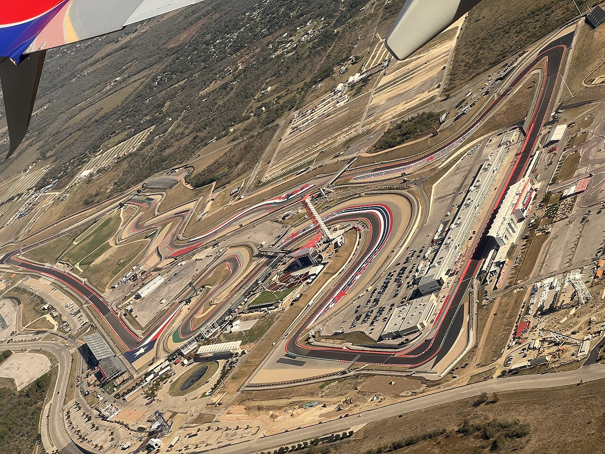
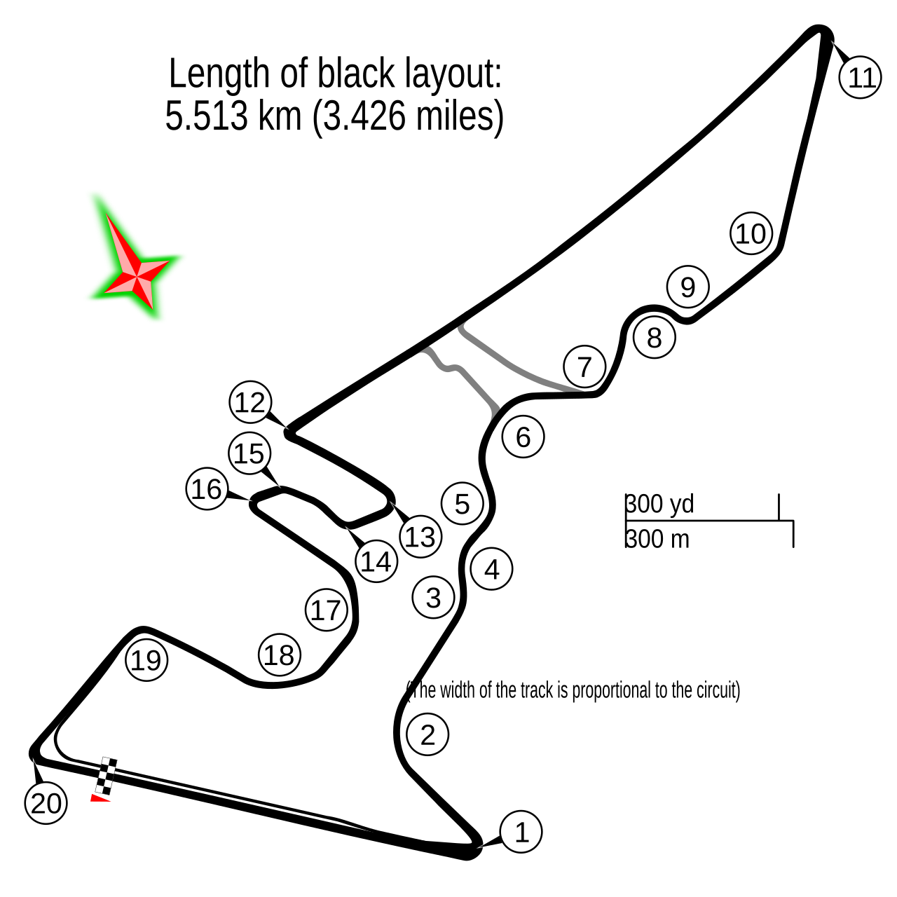
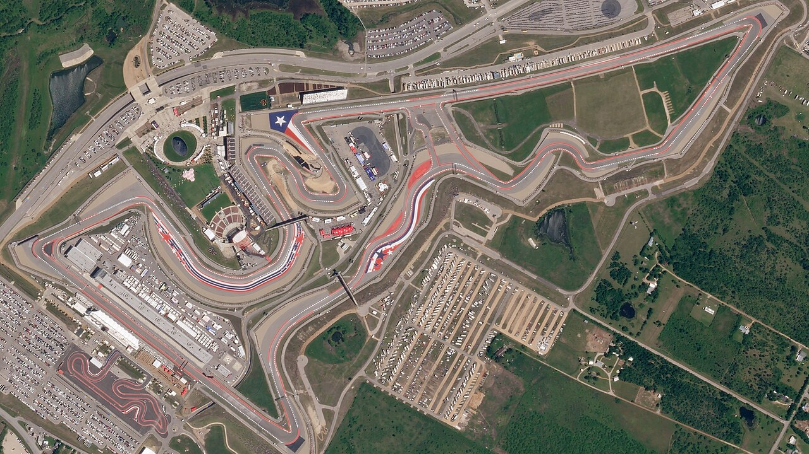
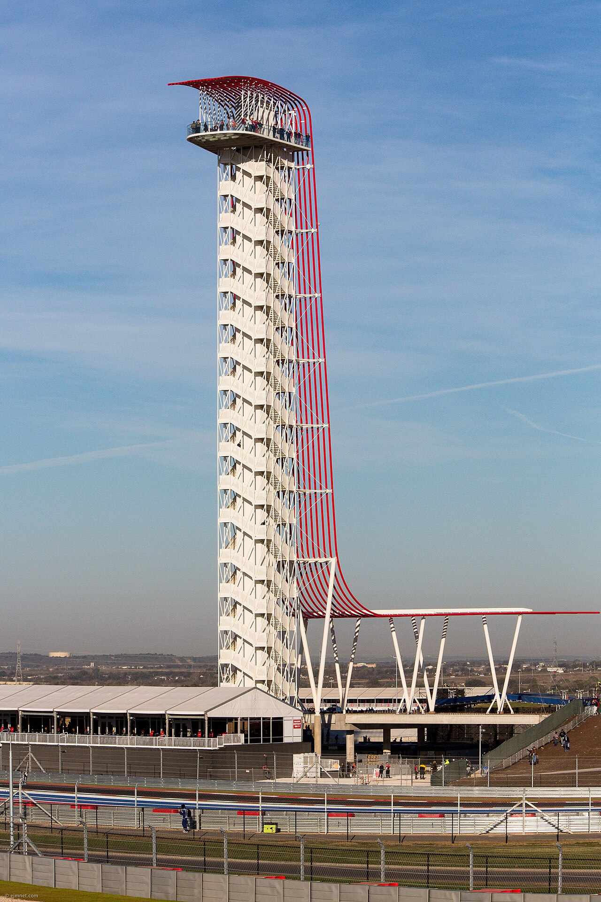

United States Grand Prix · Circuit of the Americas · Round 18 · Pre-race
Verstappen Hunts Three. Antonelli Gets His First Window.
Pre-race. Round 18 of 23, no Sprint. Antonelli leads by 102 with 150 points left on the table. Verstappen arrives on two straight wins. Lights out Sunday 25 October, 2:00 PM MT.

Courtesy: “Circuit of the Americas aerial view from WN4430” by Spheroidite, CC0, via Wikimedia Commons (no attribution legally required) · Commons file page
Austin, and the title race finally has a door handle! Fourteen years ago this week, by Formula1.com’s date, 1978 champion Mario Andretti opened the Circuit of the Americas. This weekend the place hands Andrea Kimi Antonelli his first chance to close out the 2026 championship. Not a likely chance. A narrow one. But the arithmetic says it exists, and that alone changes the temperature of the paddock conversation.
The man walking in hottest is not the leader, though. Max Verstappen has won the last two Grands Prix. Sepang: from pole, 2.307 seconds clear of Antonelli. Singapore: from pole again, 7.335 seconds clear of Charles Leclerc, after a 1:31.373 qualifying lap and a Sprint win on the same weekend. Those two Sundays are his only two wins of the year. Late, yes. Loud, also yes.
Now the storyline writes itself, and it is a storyline, not a forecast: can Verstappen make it three in a row at the track that has become his living room? Four COTA Grand Prix wins: 2021, 2022, 2023 and 2025. The last three COTA Sprints, 2023 through 2025. Pole and the win here a year ago. And the furthest-back winner in this circuit’s history is him too, from sixth on the grid in 2023. Thirteen US Grands Prix have run here and the pole-sitter has won six of them, so Saturday matters, but it has never been the whole sentence.
Desk opinion, not a statistic: there is no Sprint at COTA this year, just three practice hours, qualifying and the race. That turns Austin back into a single-shot weekend, and it arguably takes away the extra stage where Verstappen has been untouchable here for three straight years. One race. One answer.

“Austin circuit” by Gustavo Girardelli, CC BY-SA 2.0, via Wikimedia Commons · Commons file page
The championship picture is ugly for the chase pack. After Round 17 (Jolpica, matching FIA Singapore Doc 91 for the top seven): Antonelli 340 points with eight wins. George Russell 238. Lewis Hamilton 229. Verstappen 221. Leclerc 215. Lando Norris 201. Oscar Piastri 138. That is a 102-point lead over the other Mercedes and 119 over the hottest driver on the grid.
Under FIA Article A2.2, a Grand Prix pays 25-18-15-12-10-8-6-4-2-1, and Section A Issue 03 carries no fastest-lap bonus. All six of 2026’s Sprints are already done, Singapore being the last. Six Grands Prix remain, Austin included, ending in Abu Dhabi on 6 December. So the most any driver can still add is 150 points; after Sunday it is 125. Russell, Hamilton, Verstappen, Leclerc and Norris are all still mathematically alive. Piastri, 202 back with 150 left, is not. His title fight is now a storyline, not a fight.
Here is the door handle. On this arithmetic from those numbers, Antonelli leaves Austin as champion outright only if three things happen at once. He wins the race (full points), because second place would not open enough air on Russell. Russell scores one point or none, tenth or lower. Hamilton scores ten points or fewer, fifth or lower. If Antonelli wins, the margins over Verstappen, Leclerc and Norris clear 125 on their own. Read that list again: it is a lot of other people’s bad Sundays. With Russell ninth, Antonelli would lead by exactly 125 with 125 left, and a tie on points goes to the FIA tie-break, Article A2.1.4 c (i): “first places in a race”. The FIA text does not say whether Sprint wins count. On Grand Prix wins alone Antonelli would hold it 9 to 8; counting Sprints, he would lose it 11 to 10.

“Circuit of the Americas, April 22, 2018 SkySat (cropped2)” by Planet Labs, Inc., CC BY-SA 4.0 (resized), via Wikimedia Commons · Commons file page
Russell is the first name in that clinch list, and COTA has never been kind to him in the photographs. Six starts, zero podiums. His best finishes here are fifth, in 2022 and 2023; he did set the race’s fastest lap in 2022. His last two Sundays tell you the mood: retired in Sepang, classified twentieth, then a climb from nineteenth on the grid to ninth in Singapore. Storyline: second in the standings, still waiting for his first Austin trophy.
Hamilton is the opposite file. He is the most successful driver this circuit has ever seen: five wins, three poles, nine podiums. The first came in 2012: the first US Grand Prix since Indianapolis 2007, and his last win with McLaren. The other four came with Mercedes, 2014 through 2017. None of them came in red. He returns in Ferrari colours sitting third, 111 back, and his recent COTA sheet is rougher than the legend: disqualified from second on the road in 2023, retired from seventeenth on the grid in 2024, fourth in 2025. His form coming in is a podium in Sepang, second in the Singapore Sprint, and sixth from third on the Singapore grid.
Antonelli has exactly one COTA start. Seventh on the grid in 2025, thirteenth at the flag, and the fastest lap of the race, a 1:37.577. One afternoon, a small result and a big stopwatch. Storyline, not omen. He arrives off second in Sepang and third in Singapore, from fourth on the grid. The leader is not winning every Sunday right now. He is just not losing much on the ones he doesn’t.

“Tower at Circuit of the Americas” by Earl McGehee, CC BY-SA 3.0, via Wikimedia Commons · Commons file page
Ferrari’s other car has unfinished business of its own. Leclerc won here in 2024 from fourth on the grid, holds the circuit’s fastest-lap record from 2019, 1:36.169, and took pole in 2023 before being disqualified from the race. He was third last year, second in Singapore with that race’s fastest lap, 1:35.202, and sits fifth, 125 back. Norris has the Austin résumé of a man who keeps knocking: second in 2023, pole in 2024, second again in 2025, no win. He was fourth in Singapore and is sixth in the table, 139 back. Piastri, fifth in Singapore and fifth here in each of the last two years, is now racing for Sundays, not the crown.
The track itself is 5.513 kilometres, 56 laps, 308.405 kilometres of race. Formula1.com credits Hermann Tilke with the US firm HKS for the design, and likens Turns 3 to 6 to Maggotts and Becketts and Suzuka’s S curves, and Turns 12 to 15 to Hockenheim’s stadium section. A borrowed vocabulary, stitched into one lap. Thirteen Grands Prix since 2012, none in 2020, and every one of them a different argument about the same corners.
Constructors after Round 17 are their own bruise: Mercedes 578 with eleven wins, Ferrari 444, McLaren 339, Red Bull 332. A team can score at most 43 points in a Grand Prix weekend, a one-two, which makes 258 still on the table over six rounds. So Ferrari’s 134-point deficit is not closed. But open is not the same as close.
The clock, in Mountain time. Friday 23 October: first practice 11:30 AM to 12:30 PM MT, second practice 3:00 to 4:00 PM MT. Saturday 24 October: final practice 11:30 AM to 12:30 PM MT, qualifying 3:00 to 4:00 PM MT. Sunday 25 October: race start 2:00 PM MT, which is 20:00 UTC. Austin runs on Central time, one hour ahead of Mountain, so trackside that is 3:00 PM CT. No finish time is published in advance.
What this preview does not know yet, and will not pretend to: there are no 2026 COTA results of any kind, no practice times, no grid, no pole. There is no weather to give you yet. The tyre allocation and the FIA’s event documents were not available when this preview was compiled; they will be checked again Thursday. Everything above that sounds like a prediction is labelled as storyline or opinion for a reason.
After Austin come Mexico City, Brazil, Las Vegas, Qatar and Abu Dhabi. Six doors left, this one included. The leader can afford to find Austin locked. The chasers cannot afford many more. Until Sunday, the chase pack gets to hope. Austin decides whether that hope has a pulse or just a postmark.
Edit desk: PRE-RACE. No 2026 US GP session results exist yet (Formula1.com race page: “No results available for this session”). Standings: Jolpica round 17, top seven matched to FIA Singapore Doc 91 (11 Oct 2026). Points: FIA 2026 F1 Regulations Section A, Issue 03, Art. A2.2 (no fastest-lap bonus); tie-break Art. A2.1.4 c (i) (“first places in a race”) does not state whether Sprint wins count; Jolpica 2026 wins after R17: Grands Prix Antonelli 8, Russell 3; Sprints Antonelli 1, Russell 3. Outright clinch conditions are desk arithmetic from those figures; the Russell-ninth tie case is left open. Times: Formula1.com and Jolpica UTC, converted to MT; CT is a derived conversion. Map is 2014 and not verified against the 2026 layout. Sources: formula1.com 2026 United States race hub; formula1.com Singapore race result; FIA Singapore Doc 91 Championship Points; FIA 2026 Regulations Section A, Iss. 03; Jolpica 2026/16, 2026/17, 2026/18, standings and circuits/americas.